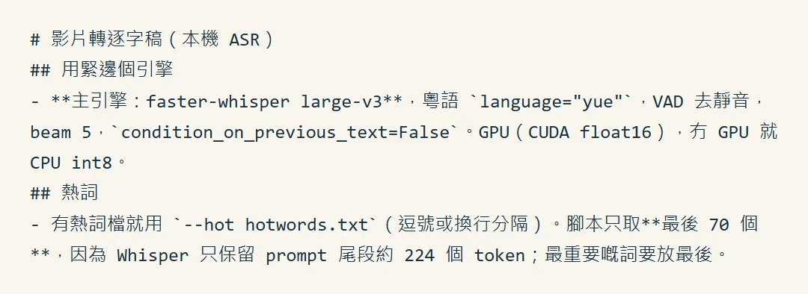

← 全部作品／ 影音與發佈


交付成果影片 → 帶時間碼逐字稿
ENGINEERING NOTES
我怎樣做
獨立 Skill 可在不同影音工作流重用，毋須每次重新設計轉錄步驟。
取得音訊
將影片交給本機轉錄流程。
辨識粵語
利用 faster-whisper 產生文字，保留各段時間位置。
交接下游
摘要、會議核對或人工聆聽可以直接引用相應片段。
- Python
- faster-whisper
- ASR

ENGINEERING NOTES
獨立 Skill 可在不同影音工作流重用，毋須每次重新設計轉錄步驟。
將影片交給本機轉錄流程。
利用 faster-whisper 產生文字，保留各段時間位置。
摘要、會議核對或人工聆聽可以直接引用相應片段。